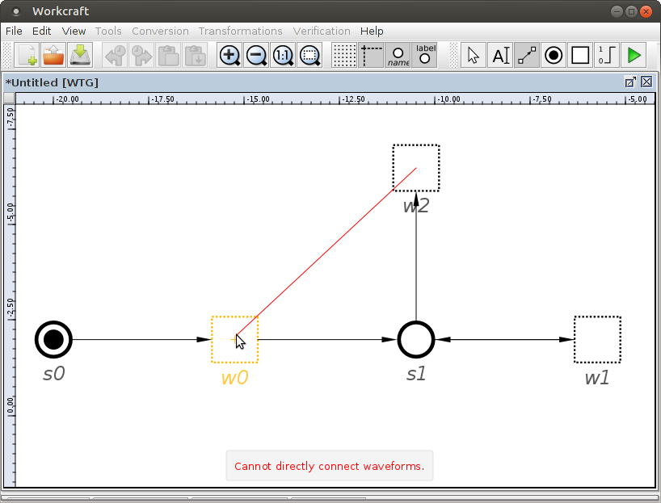
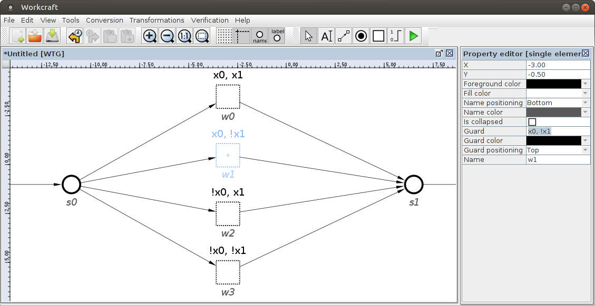
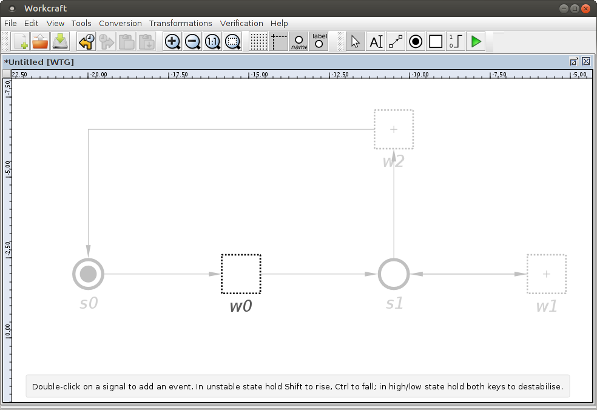
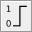
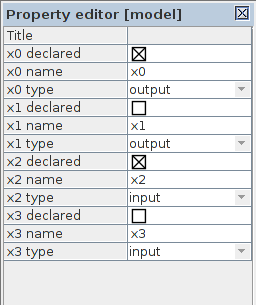
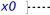
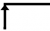
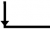
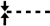
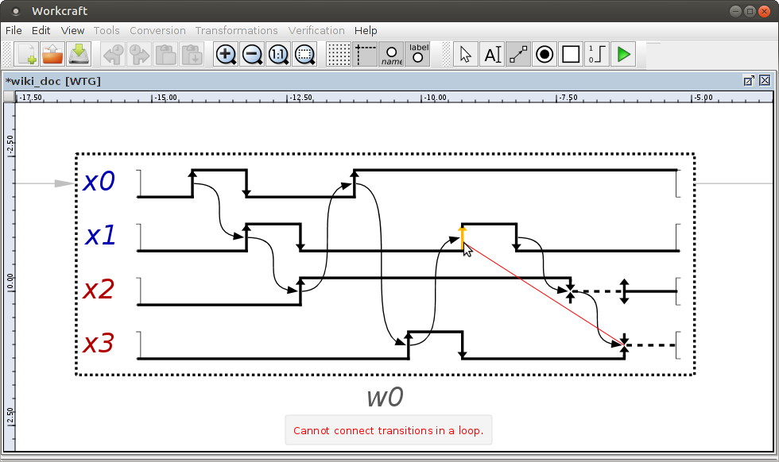

Table of Contents
Waveform Transition Graph plugin
Familiarise yourself with Workcraft interface to learn its common features that are available for all plugins.
This plugin is intended for capturing, simulation and verification of Waveform Transition Graphs (WTGs), that is an extension of Digital Timing Diagrams in which choices are allowed.
Capturing
In order to create a WTG model choose File→Create work… menu item and in the New work dialogue select Waveform Transition Graph as the model type.
A WTG has two capturing levels: the state level and the waveform level. At the state level, states and waveforms are placed and connected by arcs. At the waveform level, signals and transitions are inserted. These transitions can also be connected, between signals, by arcs.
State Level
The state level is the default level after creating a new WTG. In this mode you can place states and waveforms, as well as connect them.
Creation of states can be done by using the state tool ![[Q] State](../core/editor_tools-place.png "[Q] State") . Click the editor panel in the position you want the state to appear. A single state can be defined as initial state by double clicking on it. Alternatively, a single click on the state will bring the Property editor, allowing the option Initial to be set/unset.
. Click the editor panel in the position you want the state to appear. A single state can be defined as initial state by double clicking on it. Alternatively, a single click on the state will bring the Property editor, allowing the option Initial to be set/unset.
Creation of Waveforms can be similarly done, this time by using the waveform tool . This will create an empty waveform in the position you specify. You can double click on a waveform to move into waveform level (see Waveform Level).
States and waveforms can be connected by using the connect tool . This connection is directional; first select the source and then the destination node. Alternatively, a polyline can be defined by clicking on empty space after selecting the source. This will define intermediate points that can be moved freely after the connection is finished (by clicking on the destination node).
If you hold Ctrl then the destination node becomes a source for the next arc making it easier to form a sequence of connected nodes.
Keep in mind that states can only be connected to waveforms and waveforms can only be connected to states. Additionally, while states can be connected to multiple waveforms (in both directions), waveforms can only be connected to one source state and one destination state (possibly the same state).

You can also set guards for waveforms. A guard is a condition that guarantees that a set of signals have a specific state after a choice. In order to set a guard, click on a waveform and look for the property Guard in the property editor. Type the name of every signal that you want to guard, separated by commas. If the desired state for a signal is low, the name must be preceded by !.

Guards are defined for signals that exist in the waveforms. A signal must be in stable state (see signal states in Waveform Level) before reaching a guard. Additionally, all possible combinations of states for the signals guarded have to be explicitly defined. This means that, with n signals guarded, you will have to define exactly 2n waveforms with guards.
Waveform Level
You can enable waveform level by double clicking on a waveform. This will gray out every other waveform and state. In order to return to the state level, double click in an area outside of the waveform.

A waveform is, essentially, an instance of a Digital Timing Diagram. A signal can be created in the same way, by using the signal tool  and clicking inside the waveform box. This will add a new signal named xn, with n being a sequential number, starting from 0, that depends on how many signals have been created. Note that the tool remains active after creating a signal, so clicking several times will introduce as many new signals. You can un-select the tool by pressing Esc or selecting another tool.
Using the selection tool and then clicking on a signal will prompt the property editor. Here you can change the name of a signal, as well as type and initial state. Setting the same name than a signal used in another waveform will update the type to match that signal.
When designing WTGs, you will often have a set of signals that appear in different waveforms. Because of that, Workcraft has the option to reuse signals between waveforms without the need to create them every time. To use this feature, make sure you are at the waveform level and nothing is selected. The property editor will show a complete list of all the signals you have previously created in all the waveforms. For every signal, the fields declared, name and type will be visible. Editing the name and type fields will update name and type for that signal in all the waveforms, but for now pay attention to the declared checkbox. If a signal is declared in the current waveform, this box will be marked. Clicking on it will then remove the signal from the waveform (or from the whole WTG if there are no more instances of this signal). Clicking on an empty box will instead add it to the waveform. The signal type will be automatically deduced. The initial state will also be set if it can be inferred (see Initial State Inference for details).

Initial state inference
The initial state of a signal declared by using the property editor can be inferred in two different ways:
- If the waveform has a guard for the signal, the initial type will be set according to the value of the guard (
loworhigh). - If no guard exists for that signal, the initial state can still be guessed by connections at the state level. This is done by looking for the final value of the signal at preceding waveforms. If this value is consistent (matches in all the previous waveforms), it is used as initial state. If the signal cannot be found or the final value is not consistent, the initial state will be set
lowby default.
There are three types of supported signals; input, output and internal. By default, an output signal is created. This behaviour can be modified by holding Shift while creating a signal. Internal signals do not have a key combination. In order to use them, you can create an input or output signal and then change its type in the property editor.
The initial state of a newly created signal is, by default, low. This can be changed (in the property editor) into one of the four supported states:
low: Represented by a continuous lower line.
high: Represented by a continuous upper line.
stable: Represented by a continuous middle line.")
unsable: Represented by a dashed middle line. 
You can add transitions by double clicking on a signal. The transition added will depend on the current signal state and the key combination used. A hint text will remind you of the correct combination. The supported transitions are:
- 
rise: Represented by a vertical arrow pointing upwards, sets the signal state intohigh. This transition can be introduced in a signal at statelow, by double clicking, or in a signal at stateunstable, by holding Ctrl while double clicking. - 
fall: Represented by a vertical arrow pointing downwards, sets the signal state intolow. This transition can be introduced in a signal at statehigh, by double clicking, or in a signal at stateunstable, by holding Shift while double clicking. stabilise: Represented by two vertical arrows pointing outwards, sets the signal state intostable. This transition can be created from anunstablestate by double clicking.- 
destabilise: Represented by two vertical arrows pointing inwards, sets the signal state intounstable. This transition can be created from aloworhighstate by holding Ctrl and Shift while double clicking.
Arcs can also be added between transitions. This is done in a similar way to the connection between states and waveforms at the state level. Select the connection tool and click on a source transition, followed by a destination transition. You can add a connection between any two transitions from the same waveform, as long as no loops are introduced.

Editing
Edition of the model at the state level can be done similarly to other plugins, like the STG plugin. You can activate the selection tool and perform the standard editing features like select, drag-and-drop, delete, etc. Check Selection controls and Property editor for details. Additionally, it is possible to double click on a state to set/unset it as initial state. If another state was already defined as initial, it will be unset. You can see all the existing signals in the property editor, and modify their name and type. This change will affect every signal in every waveform.
The waveform level offers different editing options. There are four types of items that can be selected and edited:
- Connections. These are selected by clicking on the connection arrows and by group selection. The shape of the connections can be edited like connections in other plugins. Pressing Delete will remove any selected connection.
- Transitions. Clicking on a transition arrow will select it, but they cannot be group-selected. Transitions can be dragged horisontally, as long as they do not overcome other transitions. The direction of any transition can be changed in the property editor. If the new direction sets the state after the transition to the same value as the state before the transition, the transition is removed, possibly along with the following transition (if necessary for consistency). Any connection from a deleted transition will also disappear.
- Signals. A signal can be selected by clicking on its name, or in any place of its wave that does intersect with a connection or a transition. The property editor allows, between other, to change the name, type and initial state of a signal. A signal can be drag-and-dropped vertically. For increased convenience, you can hold Shift while drag-and-dropping, swapping the positions of signals. Finally, a signal can be deleted by pressing Delete. This will also remove any connections with other signals.
- Exit events. At the rightmost part of every signal there is an exit event, which marks the end of the edition space for a signal. Any exit event can be dragged horisontally to increase or decrease the size of the waveform box.
Additionally, it is possible to automatically organize the transitions within a waveform or even multiple waveforms. While selecting one or more waveforms at the state level, go to Transformations and select Structure waveforms. Alternatively, right click on a waveform and select Structure waveform. This will normalize the visual organization of the selected waveforms.
When nothing is selected, the property editor will show every signal in the WTG in a similar way than at the state level. The difference, in this case, is the addition of the declared option that is explained in the Waveform level section.
Simulation
Simulation of WTG models can be activated with the simulation tool ![[M] Simulate](../core/editor_tools-simulate.png "[M] Simulate") . While simulating, enabled transitions in the waveforms are highlighted and can be fired by clicking on them. The simulation tool controls provide the means for analysis and navigation through the simulation trace, see generic help on Simulation controls for details.
. While simulating, enabled transitions in the waveforms are highlighted and can be fired by clicking on them. The simulation tool controls provide the means for analysis and navigation through the simulation trace, see generic help on Simulation controls for details.
The simulation controls for WTG are extended to match the ones from STG simulation. This includes the signal state table and the trace diagram generator.
The signal state table, situated at the bottom of Tool controls, represents every signal in the WTG. The Signal column shows the name of the signals, while the State column displays their current state. The Visible and Color columns are used by the trace diagram generator.
Pressing on the trace diagram generator  will convert the current simulation trace into a Digital Timing Diagram. The visibility and color of each signal in the diagram can be set by using the columns Visible and Color in the signal state table. The order of signals is also defined by this table, which can be rearranged by drag-and-dropping the rows.
will convert the current simulation trace into a Digital Timing Diagram. The visibility and color of each signal in the diagram can be set by using the columns Visible and Color in the signal state table. The order of signals is also defined by this table, which can be rearranged by drag-and-dropping the rows.
Verification
The Verification menu allows to verify the following WTG properties:
- Input properness - verify that no internal signal triggers an input.
- Reachability - check whether there are transitions, waveforms or states that cannot be reached from the initial state.
- Soundness and consistency - verify that the model is consistent and well constructed. A WTG that passes this check can be transformed into an STG.
- Synthesis Guidelines - check whether an output always fires between two transitions of the same input signal. See Irreducible conflicts for more information.
If one of the properties is violated, a hint of the cause is reported. Currently, no traces are included in the report like in other plugins.